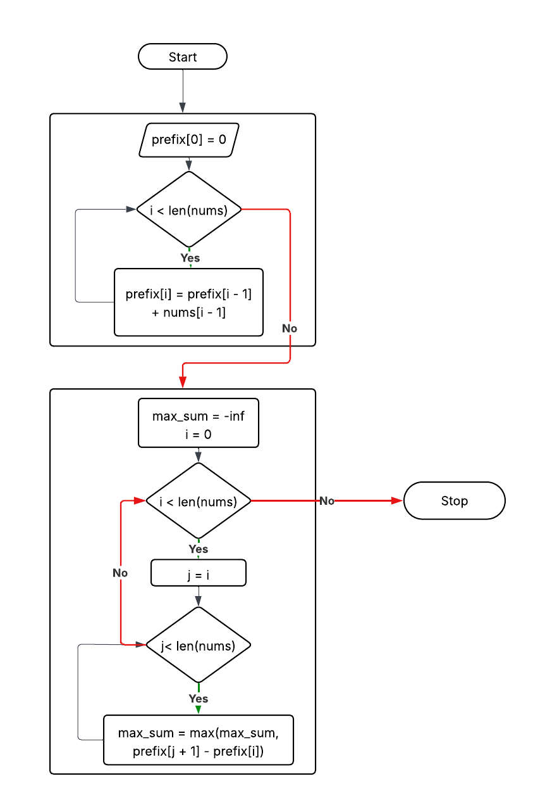
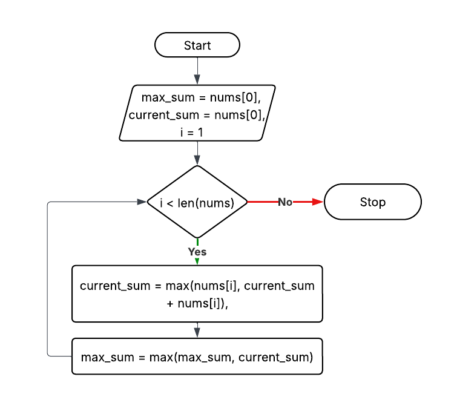

Maximum Subarray
Problem Statement
Find the contiguous subarray with the largest sum in a given integer array.
Example: nums = [-2,1,-3,4,-1,2,1,-5,4] → Output: 6 ([4,-1,2,1])
Approach 1: Brute Force
Explanation: Consider all subarrays and calculate sum.
Time Complexity: O(n²)
Space Complexity: O(1)
max_sum = -∞
for i in 0..n-1:
sum=0
for j in i..n-1:
sum += nums[j]
max_sum = max(max_sum,sum)
return max_sum

Approach 2: Prefix Sum
Explanation: Use prefix sums to compute subarray sums efficiently.
Time Complexity: O(n²)
Space Complexity: O(n)
prefix[0]=0
for i in 1..n:
prefix[i]=prefix[i-1]+nums[i-1]
max_sum=-∞
for i in 0..n-1:
for j in i..n-1:
max_sum = max(max_sum, prefix[j+1]-prefix[i])

Approach 3: Kadane’s Algorithm (Optimal)
Explanation: Keep running sum; reset if sum < 0.
Time Complexity: O(n)
Space Complexity: O(1)
max_sum=nums[0]
current_sum=nums[0]
for i in 1..n-1:
current_sum = max(nums[i], current_sum+nums[i])
max_sum = max(max_sum, current_sum)
return max_sum
